Advection-diffusion PDEs are prevalent in models of many physical applications in science and engineering. In this talk, we focus on a scalar-valued advection-diffusion-reaction equation of the form
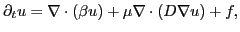
where
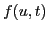
is a forcing term. Within different parameter regimes, there exist optimally scalable solvers for problems of this type, however no single solver yet applies well within all regimes of physical interest.Domain decomposition methods display nearly optimal parallel scalability within the advection-dominated regime, but typically do not scale well for diffusion-dominated problems. The converse occurs when using multigrid methods. Our goal is to find one method that is scalable in both regimes, through using a hybrid approach combining restrictive additive Schwarz (domain decomposition) and geometric multigrid.
Our approach begins with a Schur complement formulation of the linearized implicit system (
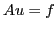
) as with the FETI (Farhat and Roux, 1991), BDD (Mandel, 1993), and BDDC (Dohrmann, 2003) algorithms, where the unknowns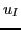
, and those residing at inter-processor boundaries,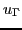
. With this decomposition, one may similarly decompose the full Jacobian matrix into four associated blocks,
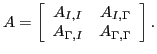
Since the
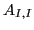
matrix is itself block-diagonal, with each block corresponding to the Jacobian matrix dependencies within a single processor, we can apply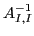
using a standard sparse direct solver. Elimination of this block results in a Schur complement system for the interface nodes,
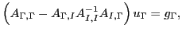
where
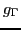
is formed during the first elimination step, and the Schur complement matrix is given by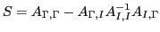
.
While traditional domain-decomposition methods do not solve this
global Schur complement system directly (and instead solve an
interface system based on only a small fraction of unknowns), we solve
the full interface system using a multilevel technique similar to
multigrid. Here, our fine grid problem consists of the entire
Schur complement (interface) system. We then proceed through a
traditional set of V-cycle iterations, where at each level we obtain
an increasingly coarse subset of the full interface system. However,
due to the
term in  , all residual corrections are
evaluated in a matrix-free fashion, using FGMRES as a smoother.
, all residual corrections are
evaluated in a matrix-free fashion, using FGMRES as a smoother.
After presenting the details of our algorithm, we present simulation results using the Ranger supercomputer at TACC. We investigate problems in both the advection- and diffusion-dominated regimes, and examine scalability of both iteration count and wall-clock time.